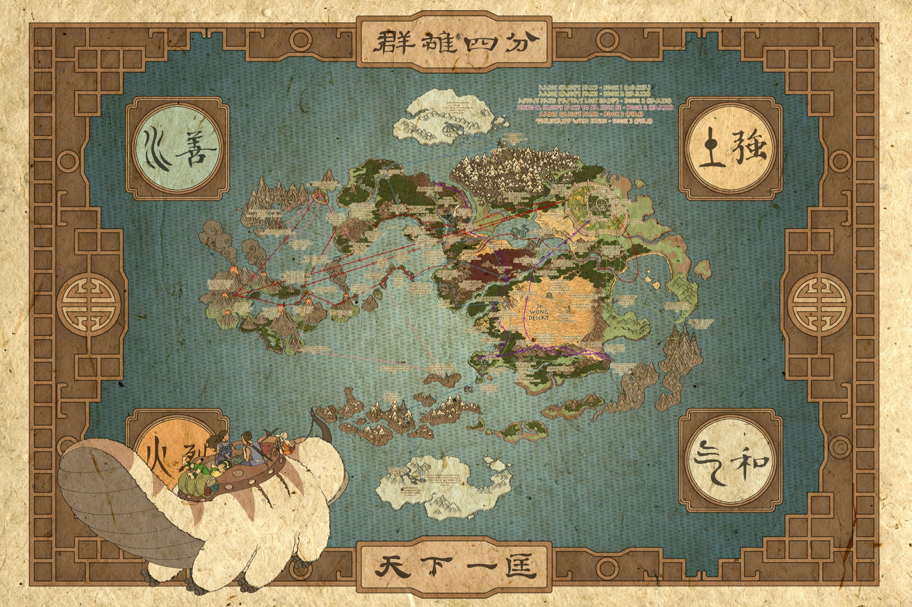

Avatar: The Last Airbender Wiki
Article
From Wikipedia, the free encyclopedia
This article is about the television series. For the franchise, see Avatar: The Last Airbender (franchise). For other uses, see Avatar: The Last Airbender (disambiguation) and Avatar (disambiguation).
Avatar: The Last Airbender (commonly abbreviated as ATLA[2]), also known as Avatar: The Legend of Aang in some regions, or simply Avatar or The Last Airbender, is an American animated fantasy action television series created by Michael Dante DiMartino and Bryan Konietzko and produced by Nickelodeon Animation Studio.
Avatar is set in an Asian and Arctic-inspired world in which some people can telekinetically manipulate one of the four elements- water, earth, fire or air—through practices known as "bending", inspired by Chinese martial arts. The only individual who can bend all four elements, the "Avatar", is responsible for maintaining harmony among the world's four nations, and serves as the link between the physical world and the spirit world. The series is centered around the journey of twelve-year-old Aang, the current Avatar and last survivor of his nation, the Air Nomads, along with his friends Katara, Sokka, and Toph, as they strive to end the Fire Nation's war against the other nations and defeat Fire Lord Ozai before he conquers the world. It also follows the story of Zuko—the exiled prince of the Fire Nation, seeking to restore his lost honor by capturing Aang, accompanied by his uncle Iroh—and later, his sister Azula. Avatar is presented in a style that combines anime with American cartoons and relies on the imagery of primarily Chinese culture,[3] with some other East Asian, Southeast Asian, South Asian, New World, Siberian, and Arctic influences.
Avatar: The Last Airbender was a ratings success and received acclaim from critics for its characters, cultural references, art direction, voice acting, soundtrack, humor, and themes. These include concepts rarely touched on in youth entertainment, including war, genocide, imperialism, totalitarianism, indoctrination and free choice.[4] It won five Annie Awards, a Genesis Award, a Primetime Emmy Award, a Kids' Choice Award, and a Peabody Award. The show is regarded by many critics as one of the greatest animated television series of all time.
Avatar aired on Nickelodeon for three seasons, from February 2005 to July 2008.[5] The extended Avatar franchise includes an ongoing comics series, a prequel novel series, an animated sequel series, and a live-action film, as well as an upcoming live-action remake series produced for Netflix. [6] The complete series was released on Blu-ray in June 2018 in honor of the tenth anniversary of its finale[7] and was made available to stream on Netflix in the United States and Canada in May 2020,[8][9] on Paramount+ in June 2020,[10] and on Amazon Prime Video in January 2021.[11]
Series Overview
Setting
Main article: World of Avatar: The Last Airbender
Avatar: The Last Airbender is set in a world where human civilization consists of four nations, named after the four classical elements: the Water Tribes, the Earth Kingdom, the Fire Nation, and the Air Nomads. In each nation, certain people, known as "benders" (waterbenders, earthbenders, firebenders, and airbenders), have the ability to telekinetically manipulate and control the element corresponding to their nation, using gestures based on Chinese martial arts. The "Avatar" is the only individual with the ability to bend all four elements.
Synopsis
Main article: List of Avatar: The Last Airbender characters
A century ago, young Avatar Aang, afraid of his new responsibilities, fled from his home and was forced into the ocean by a storm. He encased himself and his sky bison Appa in suspended animation in an iceberg near the South Pole. Shortly afterward, Fire Lord Sozin, the ruler of the Fire Nation, launched a world war to expand his nation's empire. Knowing that the Avatar must be an Air Nomad, he carried out a genocide against the Air Nomads, which he timed with the arrival of a comet that gives firebenders tremendous power. A hundred years later, siblings Katara and Sokka, teenagers of the Southern Water Tribe, accidentally discover Aang and revive him.
In the first season, Aang travels with Katara and Sokka to the Northern Water Tribe so he can learn waterbending and be prepared to defeat the Fire Nation. Prince Zuko, the banished son of the current Fire Lord Ozai, pursues them, accompanied by his uncle Iroh, hoping to capture the Avatar in order to restore his honor. Aang is also pursued by Zhao, a Fire Nation admiral aspiring to win Ozai's favor. When his navy attacks the Northern Water Tribe, Zhao kills the moon spirit; Yue, the princess of the tribe, sacrifices her life to revive it, and Aang drives off the enemy fleet.
In the second season, Aang learns earthbending from Toph Beifong, a blind twelve-year-old earthbending prodigy. Zuko and Iroh, now fugitives from the Fire Lord, become refugees n the Earth Kingdom, eventually settling in its capital Ba Sing Se. Both groups are pursued by Azula, Zuko's younger sister and a firebending prodigy. Aang's group travels to Ba Sing Se to seek the Earth King's support for an attack on the Fire Nation timed to an upcoming solar eclipse, during which firebenders will be powerless. Azula instigates a coup d'état, bringing the capital under Fire Nation control, and Zuko sides with his sister. Aang is fatally wounded by Azula, but he is revived by Katara.
In the third season, Aang and his allies invade the Fire Nation capital during the solar eclipse, but are forced to retreat. Zuko abandons the Fire Nation to join Aang and teach him firebending. Aang, raised by monks to respect all life, wrestles with the possibility that he will have to kill Ozai to end the war. When Sozin's comet returns, Aang confronts Ozai and uses his Avatar powers to strip Ozai of his firebending ability; meanwhile, Aang's friends liberate Ba Sing Se, destroy the Fire Nation airship fleet, and capture Azula. Zuko is crowned the new Fire Lord and the war comes to an end.
Episodes
Main article: List of Avatar: The Last Airbender episodes
See also: Sozin's Comet
The series consists of sixty-one episodes. The first episode—an-hour-long premiere—aired on February 21, 2005, on Nickelodeon.[12] The series concluded with a two-hour television movie broadcast on July 19, 2008.[13] Each season of the series is known as a "book", in which each episode is referred to as a "chapter". Each book takes its name from one of the elements Aang must master: Water, Earth, and Fire.[12] The show's first two seasons each consists of twenty episodes and the third season has twenty-one. The entire series has been released on DVD in regions 1, 2, and 4.[14]
As of May 2020, the complete series is available on Netflix in the United States.[15] It became the most popular show on U.S. Netflix within the first week of its release there, despite not being featured on the main page.[8] The show broke the record for longest consecutive appearance on Netflix's daily top ten list, with 60 straight days on the list, one of only two shows in the top ten record holders that was not a Netflix original series as of July 2020.[16] Later in June 2020, the complete series became available on Paramount+ (at the time CBS All Access)[10] and later on Amazon Prime Video[11] in January 2021.
Development
Conception & Production
Avatar: The Last Airbender was co-created and produced by Michael Dante DiMartino and Bryan Konietzko at Nickelodeon Animation Studios in Burbank, California. Its animation was mostly done by South Korean studios JM Animation, DR Movie, and MOI Animation. According to Konietzko, the series was conceived in early 2001 when he took an old sketch of a balding, middle-aged man and imagined the man as a child. He drew the character herding bison in the sky and showed the sketch to DiMartino, who was watching a documentary about explorers trapped at the South Pole.
Konietzko described their early development of the concept: "There's an air guy along with these water people trapped in a snowy wasteland ... and maybe some fire people are pressing down on them". [17] Two weeks later, the co-creators successfully pitched the idea to Nickelodeon vice-president and executive producer Eric Coleman.[18]
The series was introduced to the public in a teaser reel at Comic-Con 2004,[19] and premiered on February 21, 2005.[20]
In an interview, Konietzko said: "Mike and I were really interested in other epic 'Legends & Lore' properties, like Harry Potter and Lord of the Rings, but we knew that we wanted to take a different approach to that type of genre. Our love for Japanese anime, Hong Kong action and kung fu cinema, yoga, and Eastern philosophies led us to the initial inspiration for Avatar: The Last Airbender."[21]
According to head writer Aaron Ehasz, Konietzko and DiMartino originally envisioned the series being three seasons long but Nickelodeon asked Ehasz what his ideas for a fourth season would be, and he later discussed these ideas with both Konietzko and DiMartino. Ehasz believed that a fourth season would be created but this plan was interrupted when Konietzko and DiMartino became occupied with assisting M. Night Shyamalan on the film The Last Airbender. Ehasz says that Shyamalan insisted they create a fourth season instead, but Konietzko and DiMartino wanted to focus on the live-action film as they were executive producers on the project.[22] However, Konietzko and DiMartino have denied this, and claim that a fourth season was never considered by themselves nor Nickelodeon.[23]
Pilot
A pilot episode for the series was made in 2003. It was animated by Tin House, Inc., written by Michael Dante DiMartino and Bryan Konietzko, and directed by Dave Filoni. Mitchel Musso voiced Aang in this pilot but was later replaced by Zach Tyler Eisen when the show began production. In the episode, Sokka and his sister Kya (renamed to Katara by the time the series aired) must travel the world to find masters for Aang, who is the Avatar; however, they must evade a critical foe, Prince Zuko of the Fire Nation, who wants to capture Aang.
This episode was first publicly released as one of the extras in the NTSC season 1 DVD box set, which were not available with the previously released individual volumes. As the PAL box set lacks extras, the episode was not made available on DVD in PAL regions. The episode was released with audio commentary from the creators, which unlike commentary on other episodes in the season is not possible to disable on the DVD set.[24] On June 14, 2010, the unaired pilot was made available with and without commentary for the first time via the iTunes Store.[25]
In 2020, the pilot was shown on Twitch.[26]